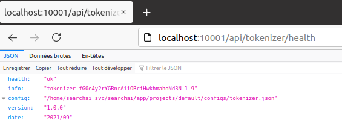

Operation and Management¶
This section describes the operations and the management of T-KEIR services.
Start and stop the services¶
All the services are embedded in a docker-compose file to run the services go in directory runtime/docker and run:
docker-compose -f docker-compose-tkeir.yml up
List services¶
docker ps -a
Stop and restart service¶
To stop a service :
docker stop <service name>
To restart a service
docker start <service name>
Get output a a service (log)¶
docker logs --details <service name>
Check the service health¶
You can check the health of a service by using the endpoint health of the service. The rest function will return standard http code 200 and a json description of the running service.
Tools life cyle and release¶
This first release is available on Thales Inner Sources repository. We make a tag for each project and create release when important features and bugs fixes has been done.